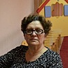
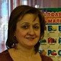

Дошкольное отделение «Бескудниковский»
В 2015 году 33% первоклассников Центра образования «Бескудниковский» пришли из дошкольного отделения.
- Дмитровское шоссе, 93к3
- Дмитровское шоссе, 93к2
- Бескудниковский бульвар, 48А
- Дмитровское шоссе, 101А
Воспитатели
Воспитатели, которых чаще всего благодарят родители (отзывы и профили сотрудников взяты с официального сайта школы):|
Воспитатель
Семенова Светлана Петровна
4 благодарности |
Воспитатель
Шарапова Елена Юрьевна
3 благодарности |
Муз. рук.
Бинас Марина Владимировна
2 благодарности |
Воспитатель
Шишкина Элла Олеговна
2 благодарности |
|
Старший воспитатель
Новикова Виктория Заграбовна
2 благодарности |

Муз. рук.
Власова Каринэ Артемовна
2 благодарности |

Воспитатель
Гусейнова Мила Мурадовна
1 благодарность |
Воспитатель
Соловьева Людмила Петровна
1 благодарность |
|
Воспитатель
Садовникова Ирина Петровна
1 благодарность |
Методист
Денисова Ольга Викторовна
1 благодарность |
Физ. рук.
Ксенофонтова Ольга Сергеевна
1 благодарность |
Отзывы
Данные собраны c официального сайта школы и через форму для отзывов.
Почти закончился учебный год и хочется сказать огромное спасибо нашим воспитателям дошкольного отделения №1-Шараповой Елене Юрьевне, Федорченко Ирине Вильевне, Шишкиной Элле Олеговне, помощнику воспитателя Давтян Шогик Вагеновне, музыкальному руководителю Власовой Каринэ Артемовне за любовь к нашим детям, за ваш педагогический труд и ваше мастерство. Спасибо вам за проведенные праздники, за общий положительный результат от всей той деятельности, которой наши дети занимаются в детском саду. Я очень рада, что привела своих детей именно в этот детский сад.
Отдельная благодарность, Новиковой Виктории Зограбовне, за прекрасно подобранный коллектив и организацию воспитательного процесса!
Уважаемые педагоги, спасибо вам еще раз. Желаю вам дальнейшей успешной работы и здоровья!
Отдельная благодарность, Новиковой Виктории Зограбовне, за прекрасно подобранный коллектив и организацию воспитательного процесса!
Уважаемые педагоги, спасибо вам еще раз. Желаю вам дальнейшей успешной работы и здоровья!
Выражаем глубочайшую благодарность воспитателю нашей группы, Семёновой Светлане Петровне, за титанический труд, ответственное отношение к своей работе, педагогический талант и душевную щедрость! Светлана Петровна - педагог с большой буквы, который вкладывает душу в воспитание наших детишек, каждому отдавая частичку себя, сочетая при этом лучшие профессиональные и человеческие качества. Она открывает нашим детям неповторимый мир, умело ведет их по тропинкам любви и доброты, зажигает в их сердцах огонёк любознательности, веры в себя и справедливость. Особенно хочется отметить её компетентность, доброжелательность и открытость. Мы уверены в том, что наши дети всегда окружены вниманием, теплотой и заботой их воспитателя.
Низкий Вам поклон, Светлана Петровна!
С уважением, родители группы № 7 дошкольного отделения №3 центра образования "Бескудниковский".
Низкий Вам поклон, Светлана Петровна!
С уважением, родители группы № 7 дошкольного отделения №3 центра образования "Бескудниковский".
Хотим сказать огромное спасибо и поблагодарить от всей души коллектив Дошкольного отделения №3 подготовительной группы №7, а именно: зам.директора по дошкольному воспитанию Ванюхину Надежду Петровну, воспитателя группы №7 Семенову Светлану Петровну, музыкального руководителя Бинас Марину Владимировну и физкультурного работника Ксенофонтову Ольгу Сергеевну, за организацию и проведение для детей и их родителей незабываемого праздника, посвященного Дню Защитника Отечества!
Ваш труд, творческих подход и нескончаемая любовь к детям, желание открыть в них чувство патриотизма, любовь к Родине и к своей истории, несут огромный вклад в будущее наших детей, в их характер и отношение к жизни в целом.
Огромное Вам СПАСИБО!
Ваш труд, творческих подход и нескончаемая любовь к детям, желание открыть в них чувство патриотизма, любовь к Родине и к своей истории, несут огромный вклад в будущее наших детей, в их характер и отношение к жизни в целом.
Огромное Вам СПАСИБО!
Я, бабушка 5 внуков, 3 из которых посещают дошкольное учреждение №1 "Бескудниковский": Алиев. Б.(подготовительная группа), Ермаков. Г.(старшая группа), Алиева. Ф. ( средняя группа). Каждый вечер, когда я их забираю домой, по дороге они в восторге обсуждают меню дня кто, что ел. Причмокивают, облизываются, жестикулируют, строят довольные личики, и в конце итог"как вкусно"...!!!Наступает утро, все в спешке одеваются, кто быстрей, чтобы не опоздать. По дороге бегут обгоняя друг друга. Им нравится, их там ждут, их там любят. Им там хорошо и комфортно.Дни насыщены какими-то событиями, которыми они обмениваются сидя за семейным столом. Глядя на их сверкающие глаза, счастливы родители и бабушка. Праздник мам нас просто поразил своей организацией, слаженностью и четкостью, подобранными декорациями, костюмами и конечно музыкальным оформлением. Дорогие наши воспитатели и музыкальный руководитель Каринэ Артемовна,Спасибо, что на это время мы забыли о всех заботах, погрузились в сказку и наслаждались игрой наших маленьких артистов. НЕЗАБЫВАЕМО!!! Хочется отметить руководителя по физической культуре Попову Инну Валентиновну. Мои внуки все уши прожужжали, так им нравится физ. культура! Мои внуки с восторгом отзываются о своих воспитателях Билол о Шараповой Елене Юрьевне, о помощнике воспитателя Давтян Шогик Вагеновна, Глеб о Садовниковой Ирине Петровне, Гусейновой Миле Мурадовне, Фатима о своей самой любимой воспитательнице Соловьевой Людмиле Петровне , помощнице воспитателя Потемкиной Надежде Анатольевне. Большое спасибо повару Стретелевой Татьяне Владимировне за прекрасно приготовленные блюда, сама бы угостилась вашей едой.
Очень хороший коллектив! Но хотела сказать особое спасибо заведующей Ивановой Виктории Заграбовне, ею умение подбора кадров и слаженной работы коллектива, хорошей охране учреждения.
Наша большая семья всех женщин будучи мамами хочет поздравить с их праздником и пожелать огромного здоровья, терпения, выдержки.
С уважением к Вам, семья Ермаковых и Алиевых!
Очень хороший коллектив! Но хотела сказать особое спасибо заведующей Ивановой Виктории Заграбовне, ею умение подбора кадров и слаженной работы коллектива, хорошей охране учреждения.
Наша большая семья всех женщин будучи мамами хочет поздравить с их праздником и пожелать огромного здоровья, терпения, выдержки.
С уважением к Вам, семья Ермаковых и Алиевых!
Хочу выразить огромную благодарность, от лица родителя группы номер 3, Школы Номер 849 "Дошкольного отделения номер 1" за подготовку и организацию творческого фестиваля "Память поколений!"Выразить огромную благодарность в подготовке, организаторам фестиваля, Денисовой Ольге Викторовне,Новиковой Виктории Заграбовне а также за подготовку моего ребёнка, воспитателю группы номер 3, Шараповой Елене Юрьевне!!!Спасибо Вам, за то что вы, воспитываете будущих наших защитников Родины, и уважению к ветеранам!Хочу пожелать Вам процветания, удачи и всего хорошего!!!!
Вложенный файл
Вложенный файл
Если вы нашли ошибку или неточность, пожалуйста, сообщите нам об этом.
Ученик, выпускник или родитель? Оставьте отзыв о детском саде.